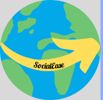
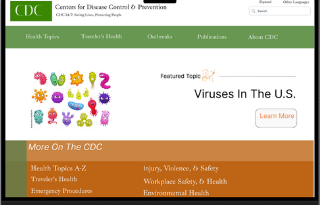
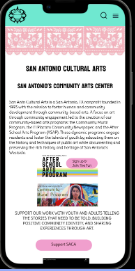

My UX Skills

In this project the main skill use was prototyping and wireframing.
Using freehanding and figma tools, I was able to create this logo for my travel app.
My UX Work
We were given the task to choose a government website to redesign. Our group choose the Center of Disease Control
For this project, the main skills used were annotating, red lining, researching, interview, and using figma to redesign a more simple look on the website.

San Antonio of Cultural Arts
This project that was given was our redesign of a non-profit organization. I chose the San Antontio of Cultral Arts organization. The organization is catered to teens who have a passion for art, specifically murals.